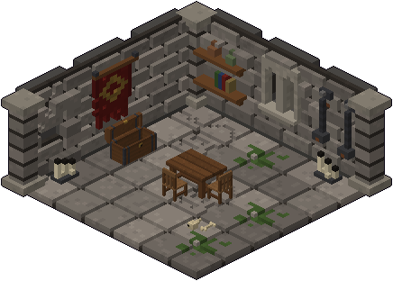
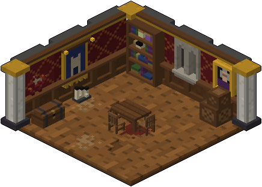
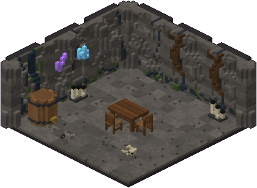
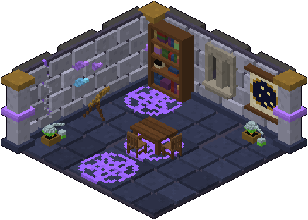
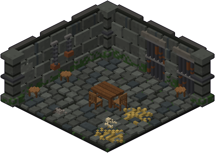
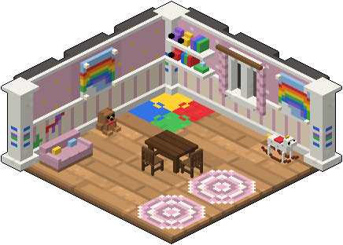

Ambienti
Ogni piano ha il suo ambiente, scelto dal seed e mai uguale a quello del piano prima. L'ambiente decide l'aspetto (pavimenti, muri, arredi, luce, nebbia), quali mostri escono nelle arene e quanto spesso, e quali boss possono aspettare davanti alla scala. Il piano della principessa è sempre nelle stanze nobiliari. Il sogno di fanciulla il seed non lo sceglie mai: ci si arriva solo dalla scala della stanza del sogno.

I sotterranei
Pietra e terra battuta, catene, stendardi e nicchie, ossa e calcinacci negli angoli. Il castello com'era una volta, sotto.
finestrelampadari
Nelle arene
- Goblin 35%
- Scheletro arciere 30%
- Ratto gigante 20%
- Ghoul 15%

Le stanze nobiliari
Parquet, marmo a scacchi, tappezzeria rossa con ritratti e arazzi, colonne di marmo e soffitti a cassettoni. Più luce e meno sporcizia: è anche l'ambiente della stanza della principessa.
finestrelampadari
Nelle arene
- Goblin 30%
- Scheletro guerriero 30%
- Pollo volante 20%
- Spettro 20%

Le caverne
Roccia grezza, stalattiti, pozze d'acqua, funghetti, cristalli e radici. Niente finestre né lampadari, e al posto delle torce lanterne e candele posate a terra. La nebbia è più fitta.
niente finestreniente lampadari
Nelle arene
- Lupo 25%
- Ragno gigante 20%
- Ratto gigante 20%
- Verme 20%
- Ghoul 15%

La torre del mago
Conci chiari, volta blu con le stelle, cerchi di rune che brillano, librerie, cristalli, alambicchi, cannocchiali e sfere di cristallo.
finestrelampadari
Nelle arene

Le segrete del castello
Acciottolato bagnato, celle con le sbarre, catene, scheletri incatenati, muffa e paglia. Buie e senza finestre.
niente finestreniente lampadari
Nelle arene
- Scheletro guerriero 30%
- Zombie 30%
- Scheletro arciere 25%
- Ratto gigante 15%
Spoiler: il sogno di fanciulla

Il sogno di fanciulla
Una cameretta di oggi: carta da parati rosa, parquet chiaro, tappeti a puzzle, televisore, divano, cavallo a dondolo, casa delle bambole e giocattoli dappertutto.
finestreniente lampadarimai la stanza del sogno
Nelle arene
- Orsacchiotto 35%
- Soldatino di latta 30%
- Bambola di porcellana 20%
- Pollo volante 15%